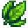
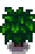

Tea Leaves
Jump to navigation
Jump to search
| Tea Leaves | |||||||||||||||
|  | |||||||||||||||
| The young leaves of the tea plant. Can be brewed into the popular, energizing beverage. | |||||||||||||||
| Information | |||||||||||||||
| Seed | |||||||||||||||
| Growth Time | 20 days | ||||||||||||||
| Season | |||||||||||||||
| XP | 0 | ||||||||||||||
| Energy | Inedible | ||||||||||||||
|
|||||||||||||||
|
|||||||||||||||
Tea Leaves are vegetables that are harvested from Tea Bushes each day during the last week (22nd-28th) of Spring, Summer, and Fall (and Winter if indoors).
Tea Leaves can be put into a Keg to make Green Tea, though Pickled Tea Leaves are more profitable.
Stages
| Stage 1 | Stage 2 | Stage 3 | Harvest | After-Harvest |
|---|---|---|---|---|
 |
||||
| 10 Days | 10 Days | Up to and including 21st of the season |
Total: 20 Days | Regrowth: 1 Day |
Gifting
| Villager Reactions
| |
|---|---|
| Like | |
| Neutral | |
Bundles
It is not used in any Bundles.
Recipes
It is not used in any recipes.
Artisan Goods
| Image | Name | Description | Ingredient | Equipment | Time | Sell Price |
|---|---|---|---|---|---|---|
| Green Tea | A pleasant, energizing beverage made from lightly processed tea leaves. | Keg | ||||
| Pickled Tea Leaves | A jar of your home-made pickles. |
Tailoring
Tea Leaves can be used in the spool of the Sewing Machine to create the dyeable green Shirt And Belt.  It can be used in dyeing, serving as a green dye at the dye pots, located in Emily's and Haley's house, 2 Willow Lane.
It can be used in dyeing, serving as a green dye at the dye pots, located in Emily's and Haley's house, 2 Willow Lane.
Quests
One Tea Leaves may be requested by Woodskip in a Fish Pond quest to increase the capacity of the pond from 7 to 10.
History
- 1.4: Introduced.
| Crops | |
|---|---|
| Spring | Blue Jazz • Carrot • Cauliflower • Coffee Bean • Garlic • Green Bean • Kale • Parsnip • Potato • Rhubarb • Strawberry • Tulip • Unmilled Rice |
| Summer | Blueberry • Coffee Bean • Corn • Hops • Hot Pepper • Melon • Poppy • Radish • Red Cabbage • Starfruit • Summer Spangle • Summer Squash • Sunflower • Tomato • Wheat |
| Fall | Amaranth • Artichoke • Beet • Bok Choy • Broccoli • Corn • Cranberries • Eggplant • Fairy Rose • Grape • Pumpkin • Sunflower • Wheat • Yam |
| Winter | Powdermelon |
| Special | Ancient Fruit • Cactus Fruit • Pineapple • Qi Fruit • Sweet Gem Berry • Taro Root • Tea Leaves |